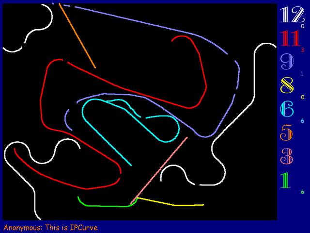
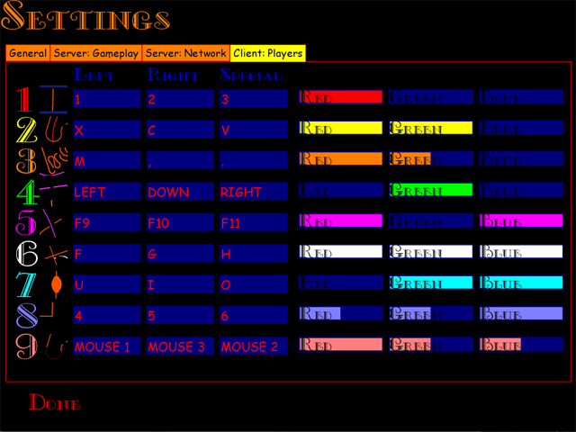
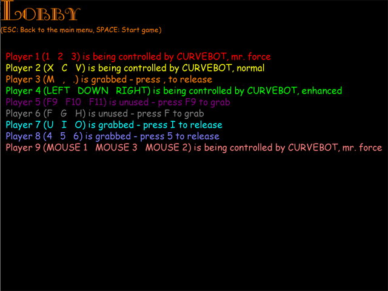

Questions? Visit the IPCurve Community Board!
(Download the local copy of the RakNet 3.0 source here if you want to build IPCurve on your own)
Download 1.0 for Windows(~1 MB)!
Download 1.0 for Linux(~0.5 MB)! (you'll need the rudeconfig shared library - a binary debian package can be found on launchpad.net)
Debian/Ubuntu packages for IPCurve 1.0 and librudeconfig have been provided by Thommy Oster. For more information, read the corresponding board thread. Thanks, Thommy!
Download 1.0 for Mac OS X (Universal,~1.3 MB)!
Download 1.0 Sources (~0.5 MB)! (you'll need the SDL, SDL_ttf, RakNet and rudeconfig libraries)
Download 0.96 for Windows(~1 MB)!
Download 0.96 for Linux(~0.5 MB)!
Download 0.96 for MacOS X (Universal,~1.3 MB)!
Download 0.96 Sources (~0.5 MB)!


Das "Achtung, Kurve" Schild: